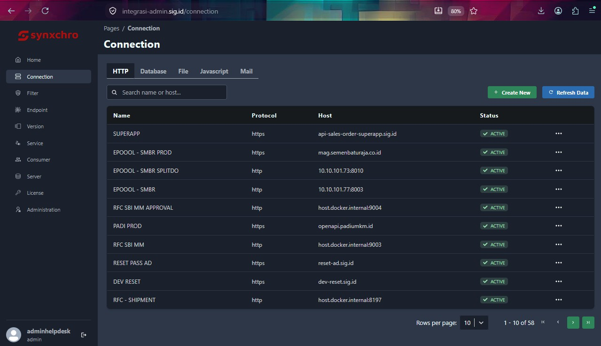

Tools API GATEWAY PLATFORM (CONSOLE) adalah bagian dari API MANAGEMENT PLATFORM yang memungkinkan developer mendokumentasikan, membuat(Production), menghapus(Dellet), merubah connection, menonaktifkan (Undeploy), mengaktifkan kembali (Redeploy), dan melakukan pencarian API/Enpoint yang tersedia.
API GATEWAY PLATFORM (CONSOLE) dapat di kses menggunakan Link dan user, password sebagai berikut:
URL Production & Dev
Ketika anda berhasil Login kedalam platform terdapat menu API GATEWAY PLATFORM (CONSOLE), sebagai berikut :

| Menu | Fungsi Menu |
|---|---|
| Home | Halaman utama (dashboard) yang menampilkan ringkasan atau informasi umum dari sistem. |
| Connection | Digunakan untuk mengelola koneksi (seperti HTTP, Database, File, Javascript, dan Mail) ke berbagai layanan, host, atau aplikasi eksternal. |
| Filter | Data belum dilengkapi pada bagian filter |
| Endpoint | Menu untuk mengatur titik akses (endpoint) komunikasi API atau URL yang digunakan untuk menghubungkan layanan. |
| Version | Menu untuk memantau atau mengelola versi dari aplikasi, layanan, atau modul yang sedang berjalan. |
| Service | Menu untuk mengelola layanan-layanan (services) utama yang aktif atau terintegrasi di dalam platform. |
| Consumer | Menu untuk mengelola data konsumen, klien, atau pihak luar yang mengonsumsi layanan dari sistem Anda. |
| Server | Menu untuk mengonfigurasi dan memantau server fisik atau virtual yang terhubung dengan infrastruktur. |
| Administration | Menu pengaturan sistem tingkat lanjut untuk mengelola hak akses, pengguna (user), peran (roles), dan konfigurasi administratif lainnya. |
Pada Tools Console team helpdesk dapat membuat API/Endpoint baru
Langkah - langkah yang harus dilakukan bila terdapat usage mencapai atau melebihi threshold 80%, sebagai berikut :